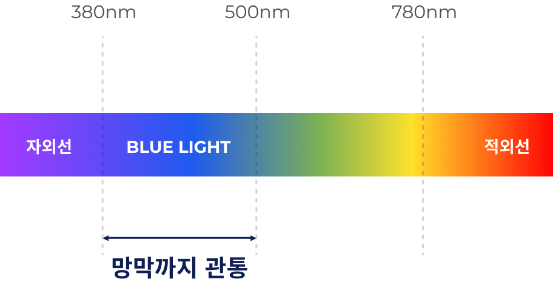
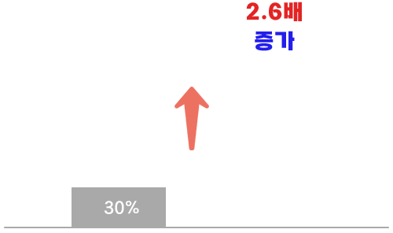
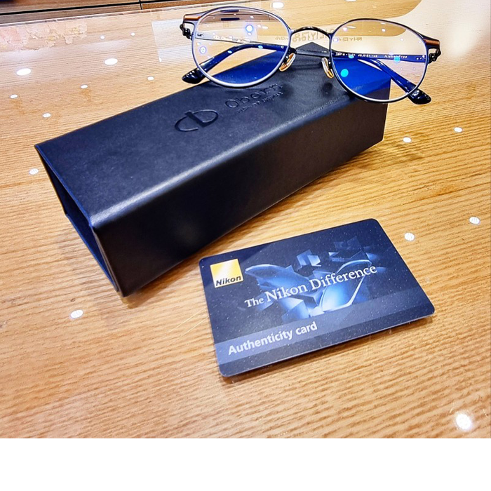
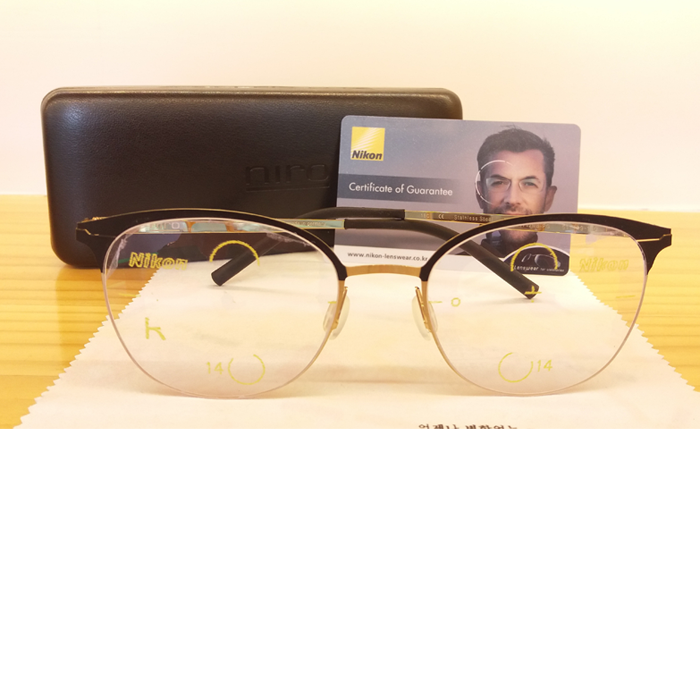
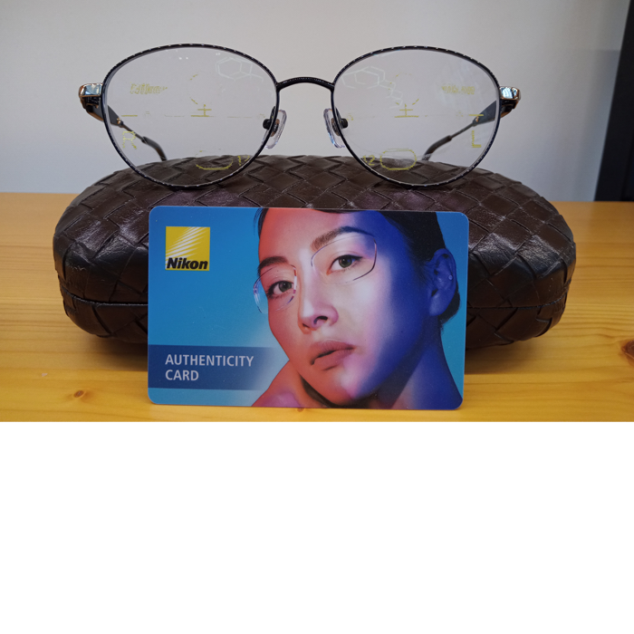

내가 쓰는 안경렌즈
얼마나 알고 계신가요?
안경렌즈도 정말 다양한 브랜드와 제품이 있습니다.
그런데 10년 넘게 안경을 쓰는 분들도 어떤 렌즈를
쓰는지는 잘 모르세요. 도수에 따라 어쩔 때는
안경테보다 비싼 값에 맞추는 안경렌즈인데도요.
내 시력과 건강을 책임질 안경렌즈. 이제라도 따져보고 선택하세요.
- 안경원에서 알아서 해주세요
-
가격만 보고 맞췄죠.
어떤 브랜드인지는 몰라요 - 안경렌즈 실물은 본 적 없어요
오늘도 하루종일
고생한 여러분의 눈,
무엇을 가장 많이 봤을까요?
-
하루 평균 8시간, PC모니터
01
일반적인 사무직 회사원은 하루 평균 8시간 이상
PC 모니터를 들여다본다고 합니다.
PC와 스마트폰에 하루 종일 시달린 눈,
눈 건강에 대해 진지하게 생각해 보신 적 있나요?
-
컴퓨터 모니터(8시간)
-
회의 때 팀장님 얼굴(38분)
-
지하철, 사무실에서 스마트폰(23분)
-
-
사무실의 보이지 않는 적, 블루 라이트
02
PC, 스마트폰, TV 등은 '블루 라이트'라는 유해한 빛을

발산하는데요. 장시간 우리 눈에 노출되면 안구 건조와
시력저하, 수면방해 등을 유발할 뿐만 아니라, 망막세포가
손상되는 황반 변성에서 심지어 안구암까지 발전될 수도
있다는 무서운 사실
하루 평균 블루 라이트
노출 추정 시간
-

PC/노트북
3시간 이상 -

스마트폰
5시간 이상 -
LED 조명
16시간 이상
치명적인 유해 광선
블루라이트 차단 렌즈로
해결하세요.
현대인이라면 어쩔 수 없이 맞닥뜨리게 되는 블루 라이트.
블루 라이트 차단 렌즈로 눈 건강과 편안한 일상을 보호하세요.
-
스마트폰, 모니터 등에서 나오는 유해한 블루라이트
자외선까지 효과적으로 차단합니다. - 눈의 피로를 줄여주고 안구 질환을 예방해 줍니다.
- 눈 주위 피부 노화와 색소 침착을 예방해 줍니다.
-
동일한 가격
대비 차단율420m 파장 기준
- A사
- NIKON
이런 분들께 추천합니다!
- 컴퓨터 모니터를 오래보는 직장인
- 스마트폰, 태블릿 등 스마트기기 사용이 많은 분
- 라식, 라섹으로 눈 보호가 필요하신 분
- 자외선에 노출되는 야외활동이 많은 분
- 실내 LED 조면 등에 눈부심을 느끼는 분
- 컴퓨터 모니터를 오래보는 직장인
- 스마트폰, 태블릿 등 스마트기기 사용이 많은 분
- 라식, 라섹으로 눈 보호가 필요하신 분
- 자외선에 노출되는 야외활동이 많은 분
- 실내 LED 조면 등에 눈부심을 느끼는 분
고객님의 후기를 살펴보세요
- 
- 
- 
-
“자외선·블루라이트·전자파
하나의 렌즈로 모두 차단 👍”블루라이트와 자외선 모두 차단되는
김ㅇㅇ고객님
렌즈인데 가격도 합리적이라 놀랐어요 ㅎㅎ
스마트 기기를 볼 때 뿐만 아니라
야외활동을 할 때도 안경 하나로 다
해결되서 너무 좋았어요! -
“안경테를 구매하지 않아도
렌즈만 맞출 수 있어 좋아요”기존에 사용했던 안경테에 NIKON BLUE PLUS
신ㅇㅇ고객님
렌즈로 교체했어요!
게다가 전자파, 블루라이트까지 차단해주니
눈 건강에도 도움이 많이 될 것 같아요!
너무 만족합니다! -
“매일쓰는 안경!
NIKON으로 바꾸고 인생이 달라졌어요!”폰을 많이 해서 시력을 보호하려고 구매했는데,
강ㅇㅇ고객님
구매하길 너무 잘한거 같네요!
아주 만족합니다!!!
가격대비 너무 만족합니다!
추천드려요~